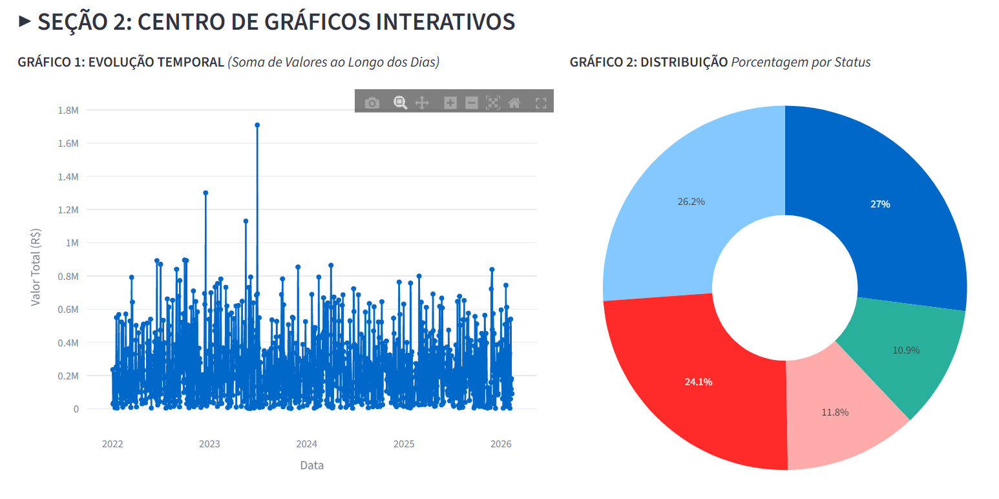
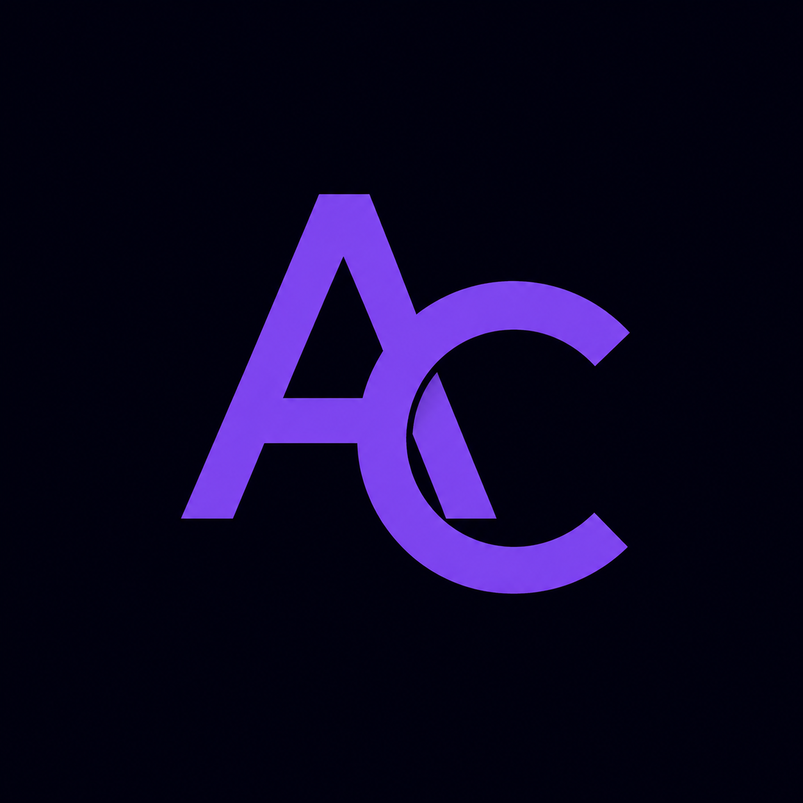
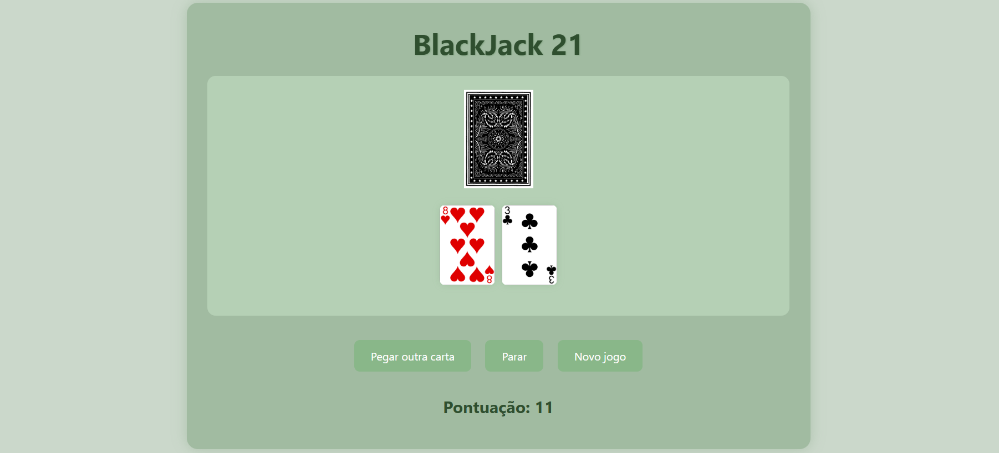
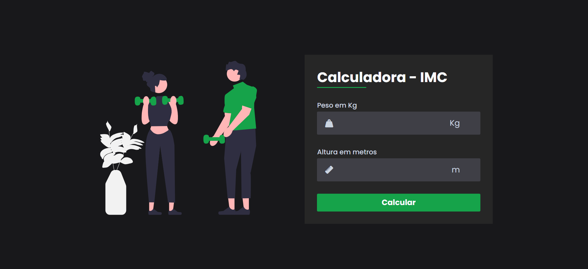
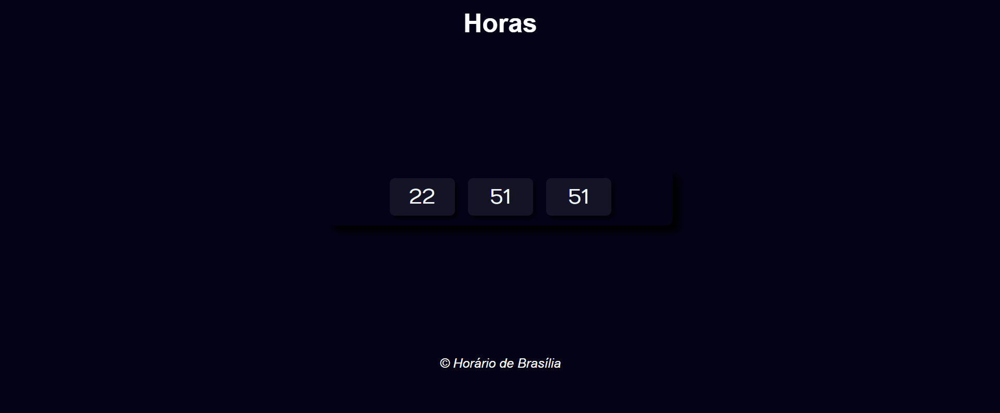

VeloDash
Dashboard analítico interativo para análise de métricas operacionais e financeiras em tempo real.

OLÁ, SOU A ANA.
Construindo experiências web modernas enquanto aprendo e evoluo constantemente no universo da tecnologia.
Sou Ana Cristina Brito de Miranda, estudante de Sistemas para Internet na UEG e estou construindo minha carreira na área de tecnologia. Atualmente, desenvolvo meus conhecimentos em programação, desenvolvimento web e banco de dados, enquanto exploro diferentes áreas para descobrir minha especialização.
Além da tecnologia, atuo como professora de inglês, experiência que fortaleceu habilidades como comunicação, organização e pensamento analítico, competências que levo para todos os meus projetos.
html
CSS
JavaScript
Python
C++
SQL
Node.Js
Streamlit
Booststrap
Git
GitHub
Figma
Canva
Em Breve...
Em Breve...

Dashboard analítico interativo para análise de métricas operacionais e financeiras em tempo real.

O clássico jogo de cartas "21" desenvolvido no navegador, aplicando lógica de programação para manipulação de baralho e condições de vitória.

Aplicação interativa que calcula o índice de Massa Corporal do usuário em tempo real, processando dados e retornando um feedback visual instantâneo.

Um relógio moderno e dinâmico que manipula o tempo em tempo real, utilizando funções assincronas do JavaScript para atualizar a interface a cada segundo.